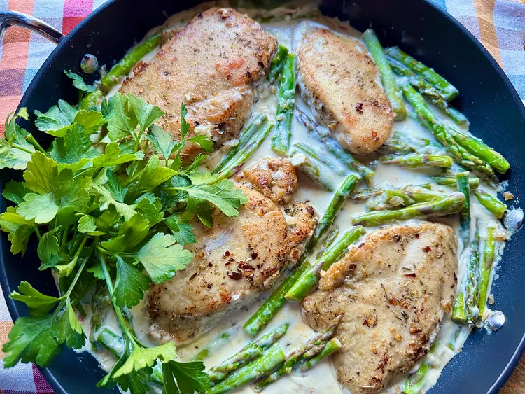

Home

Ingredients
- 2 tablespoons all purpose flavour
- 2 teaspoons italian herb seasoning
- 1/2 teaspoon red pepper flakes, or to taste
- 1/2 teaspoon salt
- 1/2 teaspoon freshly ground black pepper
- 1 1/2 pounds skinless boneless chicken breast
- 2 tablespoons unsalted butter
- 1 tablespoon olive oil
- 1/2 cup minced shallots
- 1 tablespoon minced garlic
- 1 pound fresh asparagus
- 1 cup heavy cream
- 1 lemon, juiced
- 1/4 cup grated pecorino romano cheese
- fresh flat leaf parsley for garnish
List
- In a 1-gallon resealable plastic bag, combine flour, italian seasoning, red pepper, salt, and black pepper. move ingredients around in the bag to mix well, set aside
- Place chicken pieces between 2 sheets of plastic wrap on a cutting board. pound the breasts to a uniform thickness of about 1/2-inch, and blot dry with paper towels.
- Add chicken pieces to flour mixture, seal the bag, and shake until all chicken is slightly coated
- Melt 1 tablespoon bitter with olive oil in a large skillet over medium heat, when butter is hot, carefilly add chicken pieces. lightly brown each side, ciijubg 4 to 5 minutes per side. remove chicken to a plate and keep warm.
- To the same skillet. with the drippings, add remaining tablespoon butter, shallots, and asparagus pieces. cook stirring often, about 3 minutes, or until asparagus is dender and bright green. Stin in garlic and cook until fragrant, about 30 seconds.
- Stir in dhe cream, lemon juice, and pecorino romano cheese; stir until cheese is melted, about 1 minute. Nestle chicken back pieces into the pan and cook until sauce is thickened and chicken in heated through, about 3 minutes
- Garnish with fresh flat leaf parsley, and serve warm.